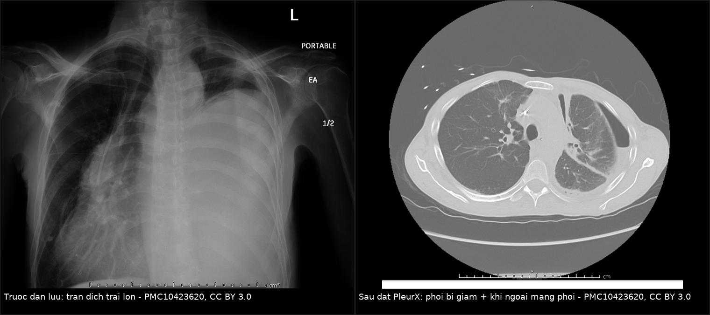
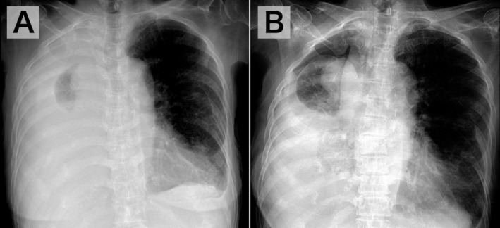
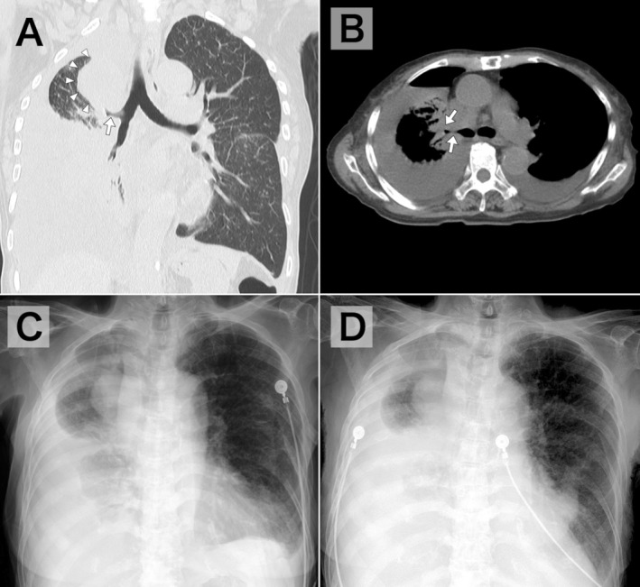

1890 — Đo áp lực màng phổi & phổi bị giam / Pleural manometry and trapped lung
Tags: pattern:phoi-khong-no pattern:tran-dich-mang-phoi vung:mang-phoi vung:phoi protocol:do-ap-luc-mang-phoi protocol:ong-dan-luu-mang-phoi score:elastance anatomy:mang-phoi
Mức chắc chắn (certainty): tổng hợp y văn (literature synthesis) — ngưỡng lấy từ loạt 247 ca đo áp lực màng phổi, trong đó 11 ca phổi bị giam có elastance 19–149 cmH₂O/L (Chest 2007, PMID 17218577), nghiên cứu 61 bệnh nhân đo elastance cuối (BMJ Open 2022, PMC9277390), nghiên cứu tiên lượng thành công gây dính màng phổi (PMC7801813) và các bài tổng quan kỹ thuật đo (Respir Med 2018, PMID 29501243 và 29402510; PMC7330282). Ca minh họa: một ca PleurX ở bệnh nhân ung thư (Cureus 2023, PMC10423620) và một ca khí–dịch màng phổi sau chọc hút do u phế quản gốc (J Gen Fam Med 2026, PMC13239953).
Câu chốt: "Phổi không nở" không phải một chẩn đoán mà là một phép đo. Bơm/hút dịch rồi nhìn X-quang là cách sai: nghiên cứu 61 bệnh nhân cho thấy X-quang thấy phổi nở có độ nhạy chỉ 44% và giá trị tiên đoán dương 24% cho elastance cuối bình thường — 71% số ca "nở trên phim" vẫn có bất thường cơ học (PMC9277390). Ngược lại, elastance > 14,5 cmH₂O/L dự báo gây dính màng phổi thất bại với độ nhạy 93% và độ đặc hiệu 100% (PMC7801813). Vì vậy câu hỏi đúng sau khi đặt dẫn lưu là: "áp lực màng phổi thay đổi bao nhiêu mỗi lít dịch hút ra?" — không phải "còn mờ bao nhiêu trên phim".
1. Tổng quan bệnh học – cơ chế hình ảnh (TẠI SAO)
1.1 Sinh lý áp lực màng phổi: con số nền
Ở dung tích cặn chức năng (FRC), áp lực màng phổi −3 đến −5 cmH₂O (PMID 29501243) — âm này là thứ giữ phổi nở và duy trì hồi lưu tĩnh mạch trong lồng ngực.
Trong tràn dịch, áp lực màng phổi có gradient thuỷ tĩnh ~1 cmH₂O mỗi cm chiều cao (PMID 29501243) → đo ở cùng một mốc (đường nách giữa) mới so sánh được giữa các lần.
Elastance (độ đàn hồi) của khoang màng phổi:
E = ΔPpl / ΔV (cmH₂O/L dịch hút ra)
Bình thường 0,5–14,5 cmH₂O/L (PMC7330282). Khi hút 1 L dịch ở người phổi nở tốt, phổi giãn ra lấp khoang → áp lực giảm từ từ; khi phổi không nở được, mỗi mL dịch hút ra làm thể tích khoang màng phổi sụt tương ứng (vì phổi không chiếm chỗ) → áp lực tụt dốc, và elastance tăng vọt (19–149 cmH₂O/L trong loạt 11 ca — PMID 17218577).
1.2 Hai cơ chế "không nở": giam phổi (trapped) vs bị giữ (entrapment)
| Phổi bị giam (trapped lung) | Phổi bị giữ (lung entrapment) | |
|---|---|---|
| Bản chất | Màng xơ trưởng thành phủ màng phổi tạng, không còn bệnh hoạt động | Bệnh màng phổi đang hoạt động: ung thư, nhiễm khuẩn, viêm màng phổi fibrin |
| Thời gian | Mạn, ổn định, thường sau một biến cố cũ (mổ CABG, xạ, ure huyết, mủ màng phổi, chọc hút lặp) | Cấp–bán cấp, tiến triển |
| Dịch | Ít tế bào, đơn nhân, pH 7,30, LDH 124 IU/L, protein 2,9 g/dL (Chest 2007) | Có thể mủ, tế bào ác tính, pH thấp, LDH rất cao |
| Có điều trị khỏi nguyên nhân? | Không — chỉ bóc màng phổi (decortication) khi có triệu chứng | Có — điều trị ung thư/nhiễm → màng phổi có thể mềm lại |
| Hệ quả | Thường không triệu chứng; đừng can thiệp chỉ vì "còn dịch" | Cần điều trị sớm, tránh để xơ hoá cố định |
- Hai thể là hai điểm trên cùng một đường; điều trị muộn của entrapment sẽ thành trapped. Vì vậy thời điểm đo thay đổi kết luận — đây là lý do phải ghi ngày, lượng dịch hút, áp lực trong hồ sơ.
1.3 Vì sao hình ảnh một mình không trả lời được
- X-quang ngực chỉ cho biết còn mờ hay không, không cho biết phổi có nở hay không: mờ đáy có thể là dịch còn lại, dày màng phổi, xẹp phổi, hoặc vòm hoành nâng cao.
- Nghiên cứu 61 ca đo elastance cuối (200 mL cuối) cho thấy "visceral pleural recoil" bất thường ở 71% ca nở trên X-quang và 77% ca nở trên siêu âm; độ nhạy 44%, PPV 24% của X-quang cho elastance bình thường (PMC9277390). Nói cách khác: phim đẹp không chứng minh màng phổi mềm.
- CT trả lời câu hỏi khác: dày màng phổi tạng, khu trú, u phế quản gốc, xẹp phổi do tắc — ba nguyên nhân "không nở" mà manometry không phân biệt được.
- Siêu âm có ích để đánh giá động (phổi trượt, mức dịch, khu trú) và chọn vị trí chọc, nhưng không thay thế phép đo áp lực.
1.4 Ba con số quyết định xử trí
- Elastance 0,5 L > 14,5 cmH₂O/L → gây dính màng phổi sẽ thất bại (Se 93%, Sp 100%) — đừng gây dính, chọn catheter màng phổi hoặc bóc màng phổi.
- Elastance > 19 cmH₂O/L → phổi bị giam, tỷ lệ thành công gây dính giảm (PMC7330282 tổng hợp Heidecker).
- 11 ca trapped lung: elastance 19–149 cmH₂O/L — dải rộng, nên một con số tuyệt đối không thay cho bối cảnh (Chest 2007).
2. Mẫu hình + chẩn đoán phân biệt theo vị trí (gamut)
2.1 Bốn mẫu hình trên bàn chọc hút
- Mẫu A — hút êm, phổi nở dần: áp lực giảm chậm (elastance < 10–14,5**), hút được **> 1 L mà không đau → dịch tự do, phổi nở tốt; có thể gây dính/đặt catheter theo kế hoạch.
- Mẫu B — hút được 400–800 mL rồi đau ngực, ho: áp lực tụt nhanh, elastance > 14,5 → phổi không nở; dừng hút, không cố lấy thêm.
- Mẫu C — sau hút, phim có mức khí–dịch, phổi nhỏ hơn, trung thất lệch VỀ phía chọc: khí–dịch màng phổi do giảm thể tích (pneumothorax ex vacuo) — không phải tràn khí do chọc; xử trí theo dõi, không đặt thêm dẫn lưu.
- Mẫu D — dịch mạn ổn định nhiều tháng, bệnh nhân chỉ khó thở nhẹ: phổi bị giam — không can thiệp nếu không triệu chứng; theo dõi và giải thích.
2.2 Gamut theo nguyên nhân
- Màng phổi ác tính: ung thư phổi, vú, mesothelioma (dày màng phổi tạng nặng), di căn — entrapment hoặc trapped sau nhiều lần chọc.
- Nhiễm khuẩn: mủ màng phổi/tràn dịch cạnh phổi phức tạp, lao màng phổi — màng fibrin dày, dễ thành trapped nếu dẫn lưu muộn.
- Sau mổ: CABG (màng phổi tạng bị "nung" do tiếp xúc máu), mở màng tim, mổ ngực.
- Sau xạ: xơ màng phổi tạng (liên quan bài 1870/1737).
- Khác: ure huyết, máu tụ màng phổi mạn, dưỡng trấp mạn, chọc hút lặp nhiều lần.
- Không do màng phổi: tắc phế quản gốc (u, nút nhầy, dị vật), hẹp phế quản, xẹp phổi do giảm thông khí, liệt hoành — "phổi không nở" nhưng điều trị ở đường thở, không phải màng phổi.
2.3 Mẫu hình hình ảnh quyết định
- Dày màng phổi tạng > 2–3 mm, đều, có vôi hoá → trapped lung (CT).
- Dày màng phổi dạng nốt, không đều, kèm khối → mesothelioma/di căn (entrapment do ung thư).
- Phổi xẹp + phế quản gốc bị tắc + trung thất lệch về bên xẹp, mức khí–dịch nhỏ → tắc phế quản, không phải trapped.
- Mức khí–dịch + thể tích nửa ngực giảm + khí quản lệch về bên chọc → ex vacuo.
3. Bảng so sánh phân biệt (ma trận đối chiếu)
| Thực thể (entity) | Hình ảnh / phép đo điển hình | Chốt vào (rule-in) | Chốt loại (rule-out) | Gợi ý xác nhận |
|---|---|---|---|---|
| Phổi bị giam (trapped lung) | Dày màng phổi tạng đều > 2–3 mm, có thể vôi hoá; dịch ít tế bào, pH 7,30, LDH 124, protein 2,9; elastance 19–149 | Elastance > 14,5 (điển hình > 19) + dịch đơn nhân ít tế bào + không bệnh hoạt động | Dịch mủ/pH thấp/tế bào ác tính → entrapment; có tắc phế quản → nguyên nhân khác | Đo áp lực + CT ngực có cản quang; air-contrast CT |
| Entrapment do bệnh hoạt động | Dày màng phổi không đều/nốt, khối u, dịch mủ hoặc tế bào ác tính; elastance cao nhưng còn thay đổi theo điều trị | Bệnh màng phổi đang hoạt động (ung thư, mủ, lao) + elastance cao | Màng phổi tạng mỏng, dịch vô khuẩn ít tế bào → trapped | Tế bào học, cấy, sinh thiết màng phổi |
| Dẫn lưu sai vị trí/tắc | Không ra dịch hoặc ra rất ít, không đau, áp lực không đổi khi rút; X-quang/CT thấy đầu catheter ngoài khoang hoặc trong nhu mô | Elastance "phẳng" + không có dịch ra + đầu catheter sai | Đầu catheter đúng khoang, dịch ra đều → không phải | Siêu âm/CT kiểm tra catheter; rửa/thay |
| Tắc phế quản gốc | Xẹp phổi + phế quản gốc bị tắc, trung thất lệch về bên xẹp, mức khí–dịch nhỏ; không có dày màng phổi tạng | Thấy tắc phế quản trên CT/nội soi + xẹp phổi | Phế quản thông, phổi xẹp do màng phổi → trapped | Nội soi phế quản; CT lát mỏng |
| Dịch khu trú (loculated) | Vách trong khoang màng phổi; dịch không di chuyển khi đổi tư thế; siêu âm thấy vách | Hình khu trú trên US/CT + hút một ổ không hết | Dịch tự do, di chuyển → không khu trú | Siêu âm; CT; có thể tiêm chất cản quang vào khoang |
| Khí–dịch do giảm thể tích (ex vacuo) | Sau hút: thể tích nửa ngực giảm, khí quản/trung thất lệch về bên chọc, phổi nhỏ, không rò khí; bệnh nhân không xấu đi | Giảm thể tích cùng bên + lệch trung thất về bên chọc sau hút | Trung thất lệch ra xa, phổi bị đẩy → tràn khí áp lực/thật | So phim trước–sau; theo dõi, không đặt thêm dẫn lưu |

Trái: X-quang trước dẫn lưu — tràn dịch trái lượng lớn, mờ toàn bộ nửa ngực trái, đẩy trung thất sang phải. Phải: CT sau đặt catheter PleurX — khoang màng phổi trái còn khí + dịch, phổi trái không nở hết (dày màng phổi tạng, phổi bị giam), không có khối chèn ép đường thở trung tâm. Đây là mẫu "hút ra dịch nhưng phổi không nở": nguyên nhân màng phổi, không phải đường thở. Nguồn: Cureus 2023, PMC10423620 Fig. 2 và Fig. 4 — CC BY 3.0; ghép bằng tools/make_composite.py (letterbox, không crop/kéo giãn).

Hai phim thẳng của cùng một bệnh nhân: (A) trước chọc hút — tràn dịch phải; (B) sau chọc hút — giảm thể tích nửa ngực phải, khí quản/phế quản lệch VỀ phía chọc, phổi phải nhỏ lại, có mức khí–dịch. Đây là pneumothorax ex vacuo (khí–dịch do giảm thể tích), không phải tràn khí do chọc — xử trí là theo dõi, không đặt thêm dẫn lưu. Nguồn: J Gen Fam Med 2026, PMC13239953 Fig. 1 — CC BY 4.0.
4. Protocol chụp + hệ phân độ/điểm chuẩn hóa
4.1 Kỹ thuật đo áp lực màng phổi (manometry) — 8 bước
- Chuẩn bị: catheter màng phổi hoặc kim chọc hút nối với cột nước (water manometer) hoặc cảm biến điện tử; zero hoá ở đường nách giữa (mốc giải phẫu của khoang màng phổi).
- Đo áp lực cơ bản trước khi hút (ghi cmH₂O; bình thường khoảng −3 đến −5 ở FRC).
- Hút từng đợt 100–250 mL, ghi áp lực ngay sau mỗi đợt (đọc cuối thì thở ra, không đọc đỉnh do ho/Valsalva).
- Tính elastance giữa hai mốc: E = ΔPpl/ΔV; ghi rõ E toàn phần và E 200 mL cuối (terminal elastance / "visceral pleural recoil").
- Dừng khi: E > 14,5 cmH₂O/L, Ppl < −20 cmH₂O, hoặc bệnh nhân đau ngực/ho nhiều — ba dấu hiệu này tương ứng phổi không nở và nguy cơ phù phổi tái nở.
- Không dùng hút áp lực âm mạnh để "cố" làm phổi nở — nguy cơ phù phổi tái nở và rò khí.
- Sau thủ thuật: X-quang ngực thẳng tại giường (hoặc siêu âm) trong 1–4 giờ; so thể tích nửa ngực và vị trí trung thất với phim trước.
- Ghi hồ sơ: lượng dịch, áp lực đầu–cuối, elastance, triệu chứng, chẩn đoán màng phổi.
4.2 Hình ảnh sau đo: ba câu hỏi
Nửa ngực có nhỏ lại và trung thất lệch VỀ phía chọc? → ex vacuo; theo dõi.
Màng phổi tạng có dày, đều, vôi hoá? → trapped lung; cân nhắc catheter màng phổi hoặc bóc màng phổi nếu khó thở.
Phế quản gốc có tắc, phổi xẹp, không dày màng phổi? → nguyên nhân đường thở; nội soi phế quản, không can thiệp màng phổi.
Air-contrast CT (bơm 200–500 mL không khí qua catheter rồi chụp) là kỹ thuật cũ nhưng hữu ích khi siêu âm/CT thường không phân biệt được màng phổi tạng dày với phổi xẹp: khí tách hai lá màng phổi, làm lộ bề dày màng phổi tạng (Chest 2007).
Siêu âm: đánh giá phổi trượt, mức dịch, vách khu trú, độ dày màng phổi; hữu ích trước chọc và theo dõi tại giường, nhưng không thay thế manometry.
4.3 Luồng xử trí
flowchart TD
A[Tràn dịch màng phổi cần dẫn lưu] --> B[Đo áp lực màng phổi trước khi hút]
B --> C[Hút từng đợt 100 đến 250 mL và ghi áp lực]
C --> D{Elastance tren 14,5 cmH2O moi lit}
D -->|Khong| E[Phoi no tot: tiep tuc ke hoach gay dinh hoac catheter]
D -->|Co| F[Dung hut, chup X-quang hoac sieu am ngay]
F --> G{Nua nguc nho va trung that lech ve phia choc}
G -->|Co| H[Khi dich do giam the tich: theo doi, khong dat them dan luu]
G -->|Khong| I[CT nguc: danh gia mang phoi tang, khu tru, phe quan goc]
I --> J{Mang phoi tang day deu}
J -->|Co| K[Phoi bi giam: catheter mang phoi hoac boc mang phoi khi kho tho]
J -->|Khong| L{Phe quan goc tac}
L -->|Co| M[Noi soi phe quan, xu ly nguyen nhan duong tho]
L -->|Khong| N[Xem lai ky thuat do va vi tri catheter]
4.4 Phân độ / cách ghi để so sánh giữa các lượt
| Biến số | Cách ghi | Ngưỡng hành động |
|---|---|---|
| Elastance toàn phần | ΔPpl/ΔV (cmH₂O/L) | > 14,5 = không nên gây dính |
| Elastance 200 mL cuối | "visceral pleural recoil" | Bất thường dù phim "nở" (PPV của phim chỉ 24%) |
| Ppl tuyệt đối | cmH₂O, cuối thì thở ra | < −20 = dừng |
| Triệu chứng khi hút | đau ngực, ho, khó thở | Xuất hiện = dừng, bất kể thể tích |
| Bề dày màng phổi tạng | mm trên CT | > 2–3 mm đều = gợi ý trapped |
5. Biến thể bình thường và cạm bẫy
- Mốc zero sai (đặt ở ngực giữa thay vì đường nách giữa) làm lệch toàn bộ đường cong; catheter gập cho "elastance phẳng" giả — kiểm tra trước khi kết luận.
- Đọc đỉnh áp lực do ho thay vì cuối thì thở ra → elastance cao giả.
- "Phổi nở trên X-quang" không đồng nghĩa màng phổi mềm: độ nhạy 44%, PPV 24% (PMC9277390) — đừng dùng phim để quyết định gây dính.
- Ex vacuo bị chẩn đoán là tràn khí do chọc → đặt thêm dẫn lưu → nhiễm trùng khoang màng phổi, rò phế quản–màng phổi. Dấu chốt: thể tích nửa ngực GIẢM + trung thất lệch VỀ phía chọc, bệnh nhân không xấu đi.
- Tắc phế quản gốc là nguyên nhân "không nở" hay bị bỏ nhất: phổi xẹp, trung thất lệch về bên xẹp, màng phổi tạng mỏng — điều trị là nội soi phế quản, không phải bóc màng phổi.
- Bóc màng phổi cho trapped lung không triệu chứng = điều trị quá mức: phẫu thuật có biến chứng (rò khí kéo dài, nhiễm trùng, đau mạn) trong khi tự nhiên thường ổn định nhiều năm.
- Hút áp lực âm để "thử" → phù phổi tái nở (hiếm nhưng chết người); phải dừng theo áp lực và triệu chứng, không theo lượng dịch.
- Dịch khu trú cho elastance cao giả và "không nở" giả: siêu âm/CT thấy vách; xử lý bằng dẫn lưu định hướng/hút vách, không kết luận trapped.
- Theo dõi trapped lung như "ung thư tiến triển": dịch mạn ổn định, ít tế bào, không có khối mới — đừng đổi phác đồ ung thư chỉ vì "còn dịch".
6. Tự lượng giá — Blind Quiz (bấm để hiện đáp án)
Ca 1 — bệnh nhân 64 tuổi, tràn dịch trái lượng lớn sau mổ CABG, khó thở
- Gợi ý lâm sàng: hút được 700 mL thì bệnh nhân đau ngực; áp lực từ −4 xuống −18 cmH₂O sau 700 mL; X-quang sau hút còn mờ đáy trái, phổi không nở hết; đầu catheter nằm đúng khoang trên CT.
- Câu hỏi: (1) Tính elastance và kết luận? (2) Phân biệt trapped lung với entrapment ở ca này dựa vào đâu? (3) Nên làm gì tiếp — và điều gì không nên làm?
Bấm để hiện đáp án (findings + chẩn đoán)
- Elastance: ΔPpl 14 cmH₂O / 0,7 L = 20 cmH₂O/L → > 14,5, nằm trong dải 19–149 của trapped lung (Chest 2007); dừng hút là đúng.
- Trapped hay entrapment: sau CABG, dịch ít tế bào, đơn nhân, không sốt, không khối màng phổi → trapped lung (màng xơ trưởng thành). Nếu dịch mủ/pH thấp/tế bào ác tính → entrapment và phải điều trị nguyên nhân.
- Nên: catheter màng phổi (PleurX) để kiểm soát triệu chứng tại nhà; không gây dính vì elastance cao dự báo thất bại (Se 93%, Sp 100%); bóc màng phổi chỉ khi khó thở nặng dù đã dẫn lưu.
- Không nên: hút thêm/áp lực âm để "cố nở" (nguy cơ phù phổi tái nở), và không đặt thêm dẫn lưu nếu phim cho thấy ex vacuo.
- Nguồn ảnh: PMC10423620 Fig. 2 + Fig. 4 — CC BY 3.0.
Ca 2 — bệnh nhân 58 tuổi, ung thư phổi, chọc hút 1,2 L vì khó thở; sau chọc hút khó thở không giảm, phim cho thấy khí–dịch màng phổi phải

CT ngực sau chọc hút: (A) khối rốn phổi phải (đầu mũi tên trắng) bít phế quản gốc phải (mũi tên trắng); (B) cửa sổ trung thất xác nhận tắc phế quản; (C, D) phim ngày 2 và ngày 5 — dịch tái lập, hình dạng phổi không đổi. Nguồn: J Gen Fam Med 2026, PMC13239953 Fig. 2 — CC BY 4.0.
- Gợi ý lâm sàng: không rò khí qua catheter, bệnh nhân không sốt, không đau tăng; CT sau đó thấy khối rốn phổi phải chèn ép/bít phế quản gốc.
- Câu hỏi: (1) Đây có phải tràn khí do chọc không, vì sao? (2) Vì sao phổi không nở ở ca này? (3) Xử trí tiếp theo?
Bấm để hiện đáp án (findings + chẩn đoán)
- Không phải tràn khí do chọc: sau chọc hút, thể tích nửa ngực phải GIẢM, khí quản/phế quản lệch VỀ phía chọc, phổi nhỏ lại, không rò khí — đây là pneumothorax ex vacuo (khí–dịch do giảm thể tích). Tràn khí thật/áp lực sẽ đẩy trung thất ra xa.
- Vì sao không nở: khối rốn phổi bít phế quản gốc → phổi xẹp không liên quan màng phổi; đây là nguyên nhân "không nở" ngoài màng phổi, và là lý do không được bóc màng phổi.
- Xử trí: theo dõi khoang màng phổi (ex vacuo tự ổn định), nội soi phế quản đánh giá tắc và can thiệp (nong/stent/đốt u) theo bệnh cảnh; không đặt thêm dẫn lưu chỉ vì "còn khí".
- Nguồn ảnh: J Gen Fam Med 2026, PMC13239953 Fig. 1 — CC BY 4.0.
Bài liên quan chéo
- 040 – Tràn dịch màng phổi
- 041 – Tràn khí màng phổi
- 1888 – Tràn dịch dưới đáy phổi giả nâng cao cơ hoành
- 609 – Ống dẫn lưu màng phổi ở trẻ
- 601 – Tràn khí màng phổi tự phát ở trẻ lớn & VATS
- 1870 – Rò thực quản–màng phổi mạn sau Boerhaave
Ảnh
images/composite_1890_phoi-bi-giam.jpg— ghép X-quang trước dẫn lưu + CT sau PleurX, CC BY 3.0, tạo bằngtools/make_composite.py.images/1890_tran-dich-mang-phoi_CXR_PMC10423620-Fig2.jpg— X-quang tràn dịch trái lớn, CC BY 3.0.images/1890_phoi-bi-giam_CT_PMC10423620-Fig4.jpg— CT phổi bị giam + khí ngoài màng phổi, CC BY 3.0.images/1890_khi-ngoai-mang-phoi_CXR_PMC13239953-Fig1.jpg— X-quang trước/sau chọc hút (ex vacuo), CC BY 4.0.images/1890_tac-phe-quan_CT_PMC13239953-Fig2.jpg— CT khối rốn phổi bít phế quản, CC BY 4.0.- Nguồn + giấy phép từng ảnh:
images/CREDITS.md.
Không dùng để chẩn đoán độc lập khi chưa có người hướng dẫn.